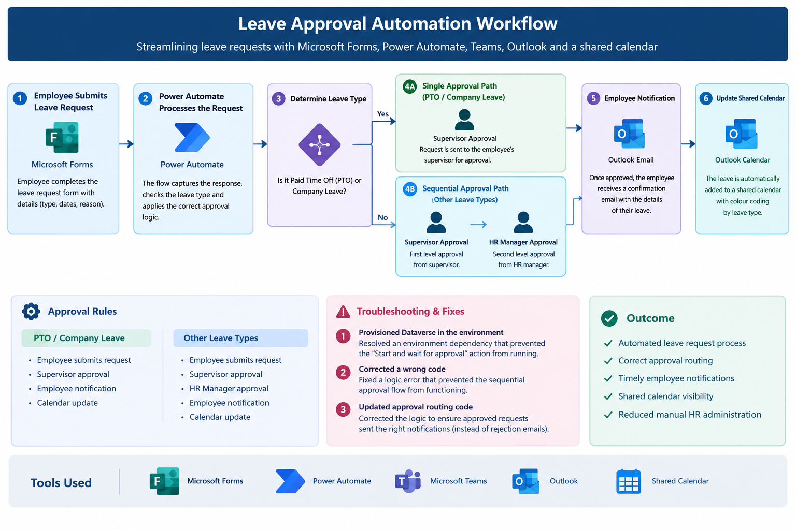
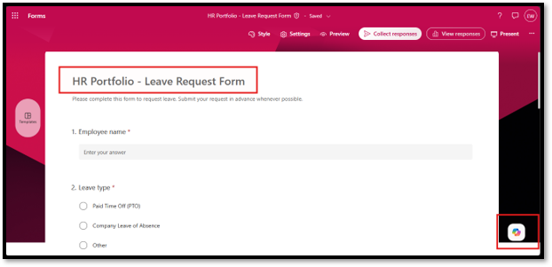
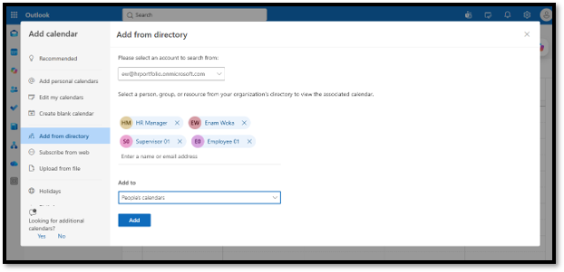
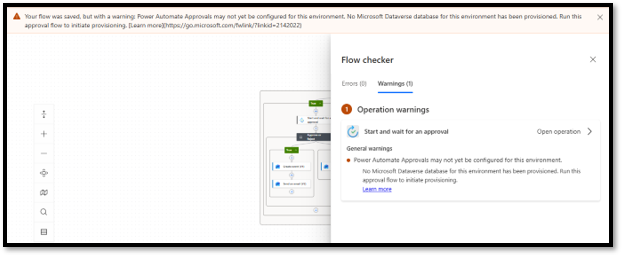
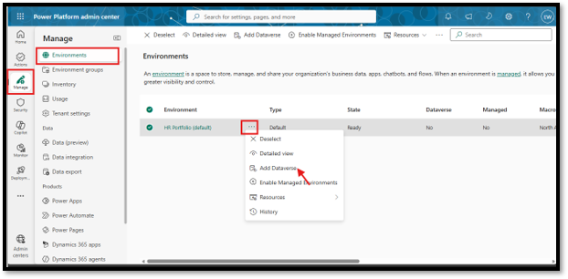
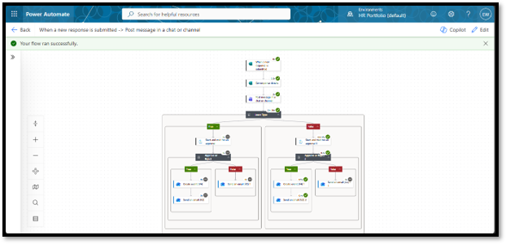
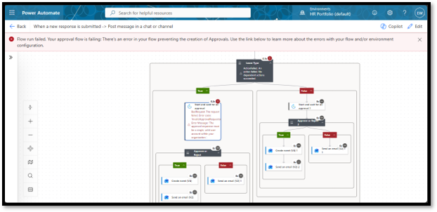
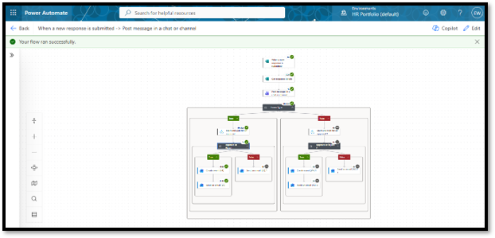
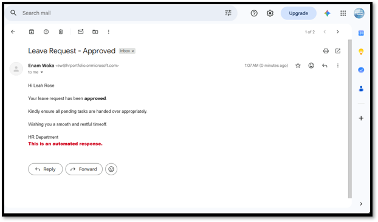

HR TECHNOLOGY • POWER AUTOMATE • WORKFLOW AUTOMATION
Leave Approval Automation
HR workflow automation project designed to streamline employee leave requests, approval routing, notifications, and calendar management.
END-TO-END WORKFLOW
Leave Approval Process
The workflow automates employee leave submission, conditional approval routing, sequential approvals, employee notifications, and calendar recording.

End-to-end leave automation workflow — employee submission, conditional approval routing, notifications, and calendar recording.
PROJECT OVERVIEW
Automating the employee leave approval process
The project automated the end-to-end leave request process, from employee submission through approval, employee notification, and shared calendar recording.
The workflow was designed to apply different approval rules depending on the type of leave requested.
BUSINESS PROBLEM
Reducing manual HR administration
Manual leave requests can create delays, inconsistent approval routing, duplicate communication, and limited visibility into approved employee absences.
The objective was to create a standardized workflow that could automatically route requests according to HR approval rules while keeping employees and managers informed.
SOLUTION
Microsoft-based HR workflow automation
I designed and configured an automated leave-management workflow using Microsoft Forms, Power Automate, Microsoft Teams, Outlook, and a shared Outlook calendar.
WORKFLOW
End-to-end approval process
The workflow begins when an employee submits a leave request through Microsoft Forms.
Power Automate evaluates the leave type and determines the appropriate approval path.
Paid Time Off / Company Leave:
Employee → Supervisor Approval → Employee Notification → Shared Calendar
Other Leave Types:
Employee → Supervisor Approval → HR Manager Approval →
Employee Notification → Shared Calendar
BUSINESS RULES
Conditional and sequential approval routing
The workflow incorporated different approval requirements based on the employee's selected leave type.
For standard paid time off and company leave, requests were routed directly to the supervisor.
For other leave categories, the workflow required two sequential approvals: supervisor approval followed by HR manager approval.
TROUBLESHOOTING
Workflow testing and issue resolution
During testing, I identified and resolved three workflow issues affecting the approval process.
01 — Environment / Dataverse issue
Identified an environment configuration dependency that prevented
the approval action from being initiated. I provisioned Dataverse
in the Power Platform environment so the approval action could
function correctly.
02 — Sequential approval logic issue
Identified incorrect workflow logic that prevented the
sequential approval path from functioning correctly.
03 — Approval outcome / routing issue
Corrected the workflow logic used to route approval outcomes.
During testing, approved requests were incorrectly triggering
rejection notifications. I corrected the logic so approval
outcomes were routed to the appropriate next step and employee
notification.
PROJECT EVIDENCE
Build, Testing & Troubleshooting Evidence
Selected evidence from the design, configuration, testing, troubleshooting, and successful implementation of the leave approval automation.

Employee Intake
Microsoft Forms captures the information required to initiate the HR leave workflow.

Calendar Integration
Approved leave is recorded on a shared Outlook calendar to improve absence visibility.

Environment Troubleshooting
Identified a Dataverse dependency that prevented the approval action from running.

Power Platform Configuration
Configured Dataverse in the environment to enable the required approval functionality.

Single-Level Approval
PTO and company leave requests are routed directly to the supervisor.

Sequential Approval Testing
Testing identified an issue preventing the two-level approval path from executing correctly.

Successful Sequential Approval
Other leave types route from supervisor approval to HR manager approval.

Automated Employee Notification
Employees receive an automated email after the approval process reaches its final outcome.
PROCESS
Build → Test → Troubleshoot → Validate
The workflow was developed and tested iteratively to validate both the standard and sequential approval paths.
Testing focused on approval routing, approval outcomes, employee notifications, and calendar recording.
OUTCOME
A standardized digital leave workflow
The completed workflow provided a structured process for submitting, routing, approving, notifying, and recording employee leave requests.
The solution also demonstrated how HR business rules can be translated into automated workflow logic while maintaining appropriate approval controls.
SKILLS DEMONSTRATED
HR technology capabilities
TOOLS